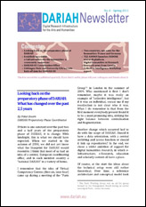

|
Latest News
Tuesday, 20 December 2011
DH in Germany, Austria and Switzerland is surely “alive and kicking”, as a multitude of DH projects as well as funding programs by, among other, the Deutsche Forschungsgemeinschaft (DFG), the Bundesministerium für Bildung und Forschung (BMBF) and the Volkswagenstiftung demonstrate – but DH scholars in this region still lack a representative organization that would formulate our field’s academic interests and requirements and communicate these to regional research policy makers and funding agencies, as well as to the broader public. In order to facilitate future strategic development of DH as a leading future research paradigm, the DHD invites all academic DH researchers in the German speaking region to come together, exchange ideas and information and establish a joint professional organization called "Digital Humanities Deutschland (DHD)". The DHD is intended as a chapter organization within the European ALLC (Association for Literary and Linguistic Computing). The formation of the DHD combines three elements: - an initial project fair as a platform for the informal presentation of current undertakings in the Digital Humanities, with a particular focus on projects lead by of junior researchers;
- the subsequent founding of a German regional association DHD as a regional chapter of ALLC;
- an expert panel discussion that will explore strategic issues of relevance to the emerging Digital Humanities community in the German speaking countries.
The format of the inaugural meeting will be that of a so-called un-conference. This meeting will be held at the University of Hamburg on 17 July 2012 in conjunction with the DH 2012 and will conclude immediately prior to its opening. (The registration procedure will be coordinated with that for the DH 2012.) To receive updates on this initiative, please subscribe to the DH 2012 mailing list and earmark the new DHD web address http://www.dig-hum.de which will go live soon.
Thursday, 01 December 2011
The European Commissioner for Research, Innovation and Science, Máire Geoghegan-Quinn, held a speech about "The future of Social Sciences and Humanities in Horizon 2020" at the British Academy London on the 10th of November. In this speech she underlined the importance of the Social Sciences and Humanities and announced they would have a central role in Horizon 2020, the new European research funding programme estimated to be worth €80 billion. Máire Geoghegan-Quinn highlighted the importance of European Research Infrastructure Consortia - commonly called "ERICs" - in the social sciences and humanities. "Given the importance of developing and providing better access to social sciences data to increase knowledge, innovation and evidence-based policy making, we are planning to launch by 2015 a number of European Research Infrastructure Consortia - commonly called "ERICs" - in the social sciences and humanities. They will play a significant role in reinforcing cooperation between national and EU-level research and innovation policies. ERICs work to establish and operate research infrastructures to promote innovation, research and technology transfer in areas that are often beyond the reach of a single research group, nation or region. While one normally thinks of such infrastructures in terms of particle accelerators or large-scale laser systems, SSH infrastructures are also very important, and these range from the digitalisation of data archives in the fields of history or arts, to open access datasets in areas ranging from ageing to voting behaviours. Infrastructures are one of the important elements of the European Research Area – better known as ERA. As you know, in addition to Horizon 2020, the Commission's intention is to come forward with proposals for an ERA Framework in 2012, as announced in the Innovation Union."
Thursday, 24 November 2011
The Alliance for Permanent Access has released a "Report on Integration of Data and Publication" Scholarly communication is the foundation of modern research where empirical evidence is interpreted and communicated as published hypothesis driven research. Many current and recent reports highlight the impact of advancing technology on modern research and consequences this has on scholarly communication. As part of the ODE project this report sought to coalesce current though and opinions from numerous and diverse sources to reveal opportunities for supporting a more connected and integrated scholarly record. Four perspectives were considered, those of the Researcher who generates or reuses primary data, Publishers who provide the mechanisms to communicate research activities and Libraries & Data enters who maintain and preserve the evidence that underpins scholarly communication and the published record. This report finds the landscape fragmented and complex where competing interests can sometimes confuse and confound requirements, needs and expectations. Equally the report identifies clear opportunity for all stakeholders to directly enable a more joined up and vital scholarly record of modern research. Find the report here.
Wednesday, 23 November 2011
The Standing Committee for the Humanities of the European Science Foundation has the pleasure to announce the recent publication of a Science Policy Briefing (SPB) on “Research Infrastructures in the Digital Humanities”. The briefing was produced following the decision of the Standing Committee for the Humanities (SCH), in early 2009, to make Research Infrastructures (RIs) in the Humanities one of its top priorities. An SCH Expert Group on RIs was then set up and, under the chairmanship of Professor Claudine Moulin, has led the work towards the production of the briefing. The SPB builds on already existing documents, and in particular, on a report compiled by an earlier SCH “Vision Group on RIs” which met during 2007. It also incorporates views put forward by members of different communities involved in Humanities RIs that were expressed at the Strategic Workshop on Research Communities and Research Infrastructures in the Humanities that was organised by the SCH and the RI Expert Group in October 2010 in Strasbourg. As highlighted in the foreword, the briefing argues that without Research Infrastructures (RIs) such as archives, libraries, academies, museums and galleries, significant strands of Humanities research would not be possible. By drawing on a number of case studies, it also demonstrates that digital RIs offer Humanities scholars new and productive ways to explore old questions and develop new ones. The report focuses on developing a common strategy on RIs in the Humanities at a European level and identifies seven key areas of priorities and future research directions aimed at researchers and information professionals, as well as the institutions which make decisions of importance to them, such as funding bodies, those responsible for management and administration of research organisations and RIs, selection and promotion committees. This ESF Science Policy Briefing has been prepared under the responsibility of the Chair of the Standing Committee for the Humanities Professor Milena Zic-Fuchs, the Head of the Humanities and Social Sciences Unit, Dr Nina Kancewicz-Hoffman, the ESF Science Officer Dr Arianna Ciula, with editorial support from the Science Officer Mr Diego De La Hoz Del Hoyo.. The PDF of the publication can be accessed at http://www.esf.org/research-areas/humanities/strategic-activities/research-infrastructures-in-the-humanities.html.
|
Date: Thursday 17th and Friday 18th November 2011
Venue: University of Copenhagen, Denmark
Website: http://cst.ku.dk/sdh2011/ SDH2011 is the second conference that is jointly organized by the CLARIN and DARIAH initiatives, which are building the European research infrastructure for the humanities and related disciplines. Digital technologies have the potential to transform the types of research questions that we ask in the Humanities, allowing us both to address traditional questions in new and exciting ways but also to answer questions that we were not even aware we could ask – hence the title of this conference. How can digital humanities help us not just to find the answers to our research questions more quickly and more easily, but also to formulate research questions we would never have been able to ask without access to large quantities of digital data and sophisticated tools for their analysis? Supporting Digital Humanities will be a forum for the discussion of these innovations, and of the ways in which these new forms of research can be facilitated and supported.
CLARIN and DARIAH are creating European research infrastructures for the humanities and related disciplines. SDH2011 aims to bring together infrastructure providers and users from the communities involved in these two infrastructure initiatives. The conference will consist of a number of topical sessions where providers and users will present and discuss results, obstacles and opportunities for digitally-supported humanities research. Participants are encouraged to engage with honest assessments of the intellectual problems and practical barriers in an open and constructive atmosphere.
The first SDH conference in 2010 gave a broad and multi-facetted presentation of the domains of interest to CLARIN and DARIAH. This time we have chosen a somewhat more focussed approach, concentrating on two major themes, but not excluding other themes of interest for the humanities. The two themes are:
• Sound and movement – music, spoken word, dance and theatre
• Texts and things – texts, and the relationship between texts and material artefacts, such as manuscripts, stone or other carriers of texts For further information please visit the conference website: http://cst.ku.dk/sdh2011/.
Re-writing the digital landscape Earlier this month EGI (European Grid Infrastructure) signed a Letter of Intent with two European Commission funded projects aiming to provide the arts and humanities with an e-Infrastructure of their own. The two projects, DARIAH and CLARIN, both signed the three-way agreement, which has the express intention of ensuring that technology developed by the two ESFRI projects and EGI are compatible and provides the best service to their users. The agreement also provides a blueprint for similar arrangements between EGI and other user communities that are interested in exploring grid technology but are temporarily constrained from establishing a Virtual Research Community.
While there is a wide range of research using the European grid, the arts and humanities are currently under represented but both DARIAH and CLARIN aim to remedy this. CLARIN (Common Language Resources and Technology Infrastructure) is focussed on creating tools and resources for the language community while DARIAH (Digital Research Infrastructure for the Arts and Humanities) supports the wider humanities and arts community. The two projects are part of the European Strategy Forum on Research Infrastructures (ESFRI) programme. This initiative helps to support a coherent approach to policy-making on research infrastructures in Europe so that researchers get the resources/technologies they need. This latest agreement cements the relationship between the 2 ESFRI projects and EGI.eu helping all three to develop common tools and technologies while exploring further opportunities for collaboration. Connecting EGI with the infrastructures developed by these two projects will have benefits for the sites within partner countries providing the resources, benefits for the countries themselves in terms of integrating the resource centres with the EGI monitoring and support services and finally, benefits for the research communities in terms of support, advice and influence over the evolving infrastructure. The first priority however is to understand the needs of the communities that DARIAH and CLARIN represent so that they can build and manage an infrastructure for their users. The areas of greatest concern are; data storage and availability, the hosting and monitoring of services as well as authentication and authorisation issues. Chief Community Officer, Steve Brewer said: “For EGI this is the first step in establishing and welcoming a valuable new user community onto the European grid, DARIAH and CLARIN represent a broad range of interests across the arts, humanities and social sciences with, between them, a wealth of digitally-enabled methods and tools to integrate with the infrastructure.” Outside the agreement with EGI CLARIN and DARIAH have also agreed to co-organise the SDH 2011 conference in Copenhagen later in the year. The meeting, the full name of which is “Supporting the Digital Humanities: Answering the unaskable”, will be held in the Danish capital on the 17th and 18th of November. It will provide a forum for discussing the benefits of the e-Infrastructures to the arts and humanities alongside how new forms of research can be facilitated and supported. You can learn more about the agreement and the two projects at http://www.egi.eu/collaboration/CLARIN_DARIAH.html More information about SDH 2011 can be found at http://cst.ku.dk/sdh2011/
Following the successful completion of the DARIAH preparatory phase project in February 2011, DARIAH has moved into the transition phase. During the transition phase, DARIAH will submit an application to the European Commission to establish a European Research Infrastructure Consortium (ERIC). This legal framework will facilitate the long-term sustainability of DARIAH. Following the successful ERIC application, the DARIAH construction phase will begin in January 2012. A new DARIAH-EU website is currently being developed. Once launched, the current website which is from the DARIAH preparatory phase project, will be archived. In the meantime, if you require any further information about DARIAH, please do not hesitate in contacting the DARIAH-EU Coordination Office: dariah-dco@dariah.eu
DARIAH Newsletter Issue 8 - Spring 2011 In this issue: - Looking back on the preparatory phase of DARIAH
- Establishing a stable e-Infrastructure for the humanities: a community endeavour
- DARIAH-EU Coordination Office
- Göttingen State and University Library sets kick-off date for DARIAH-DE
- Two countries, one voice for the humanities: France and Germany
- TGE ADONIS launches ISIDORE research platform
- Digital humanities in Denmark
- Research news from Croatia
- Collective Intelligence Workshop report
 Download Newsletter in PDF Format Download Newsletter in PDF Format
|
|
|
|
|
|
Page 9 of 14 |
|
Information brochure

Download PDF
|